convergence.clubsR/plot.convergence.clubs.R
plot.convergence.clubs.RdPlot the transition paths of regions in the convergence clubs and the average transition paths of those clubs.
# S3 method for convergence.clubs plot(x, y = NULL, nrows = NULL, ncols = NULL, clubs, avgTP = TRUE, avgTP_clubs, y_fixed = FALSE, legend = FALSE, save = FALSE, filename, path, width = 7, height = 7, device = c("pdf", "png", "jpeg"), res, ...)
| x | an x of class |
|---|---|
| y | unused, added for compatibility with function |
| nrows | number of rows of the graphical layout, if NULL, it is automatically defined |
| ncols | number of columns of the graphical layout, if NULL, it is automatically defined |
| clubs | numeric scalar or vector, indicating for which clubs the transition
path plot should be generated. Optional, if omitted, plots for all clubs are produced.
If |
| avgTP | logical, indicates if a plot of the average transition paths of
the convergence clubs should be produced, default to |
| avgTP_clubs | numeric scalar or vector, indicating for which clubs the average transition path should be displayed. Optional, if omitted, average transition paths for all clubs are plotted numeric scalar or vector, indicating for which clubs the average |
| y_fixed | logical, should the scale of the y axis be the same for all plots? |
| legend | logical, should a legend be displayed? |
| save | logical, should the plot be saved as a file? |
| filename | optional, a string indicating the name of the file where the plot should be saved; must include the extension (e.g. "plot.pdf") |
| path | optional, a string representing the path of the directory where the plot should saved; the path should not contain the a final slash symbol ("/") |
| width | the width of the plot, in inches. |
| height | the height of the plot, in inches. |
| device | string indicating the format to be used to save the plot; one of "pdf", "png" or "jpeg". |
| res | the resolution of the image, in ppi; only used with |
| ... | other parameters to pass to function |
nrows and ncols are optional parameters used to define the row and
column number for the plot layout. Both or just one of them may be specified.
If none of them is specified, the layout dimension is chosen automatically.
Graphical parameters of the horizontal line plotted at y=1 may be modified by using the following regular plot parameters:
lty defines the type of line, default is "solid"
lwd defines the width of the line, default is 2
col defines the color of the line, default is "black";
set it to "white" to remove the horizontal line.
If legend=TRUE and a column with regions' names is available in the
x object, those names are truncated to fit the plot's legend. The graphical
parameter cex may be used to modify the size of the legend's labels, default is 0.8
Note that, when using RStudio, one may incur in an error if the plot window is too small. Enlarging the plot window usually solves the problem.
data("countryGDP") clubs <- findClubs(countryGDP, dataCols=2:35, regions = 1, refCol=35, time_trim = 1/3, cstar = 0, HACmethod = "FQSB") #plot transition paths for all clubs plot(clubs)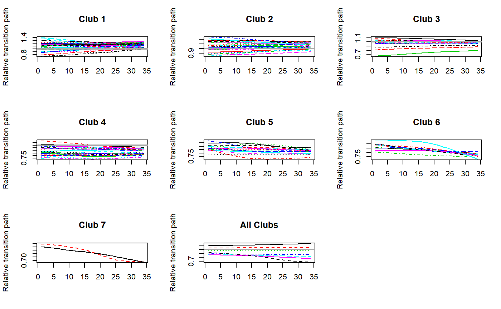plot(clubs, y_fixed=TRUE)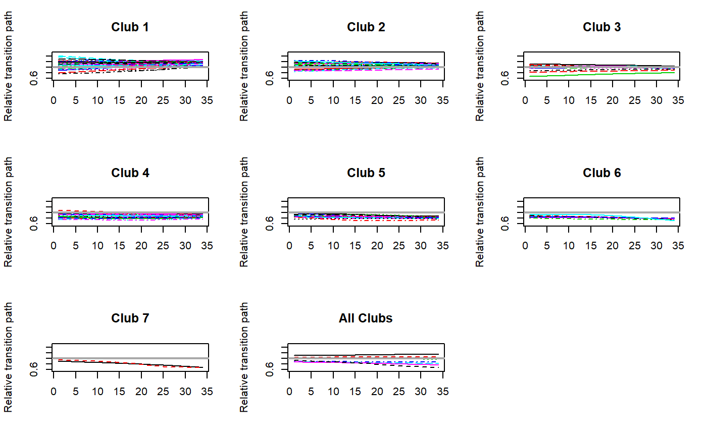plot(clubs, nrows=2,ncols=4)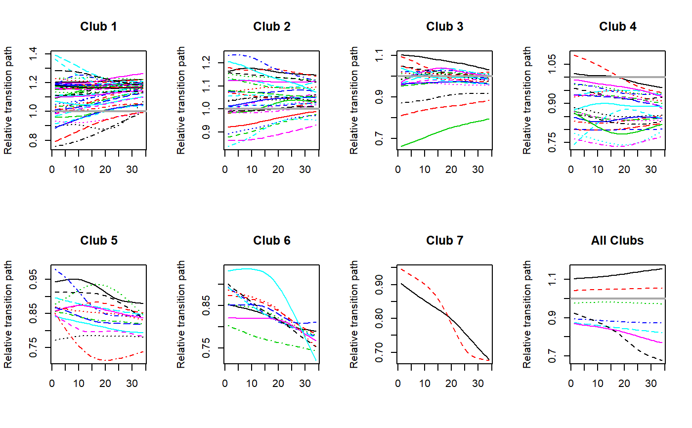plot(clubs, ncols=3, lty='dotdash', lwd=3, col="blue")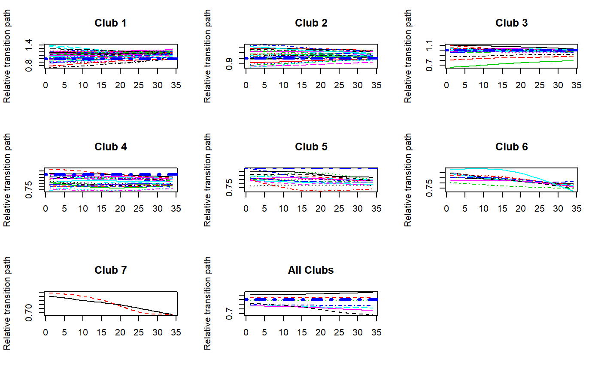plot(clubs, ncols=3, y_fixed=TRUE, lty='dotdash', lwd=3, col="blue")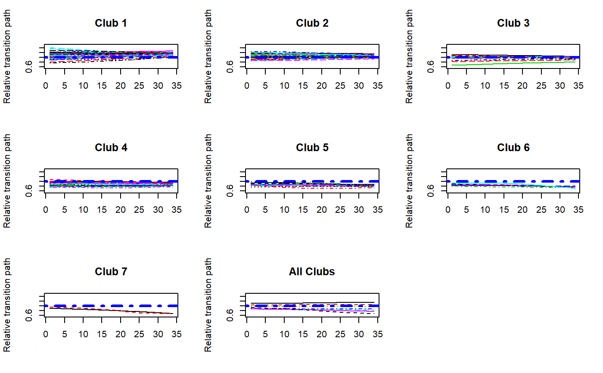#Plot transition paths only for some clubs plot(clubs, clubs=c(2,4,5))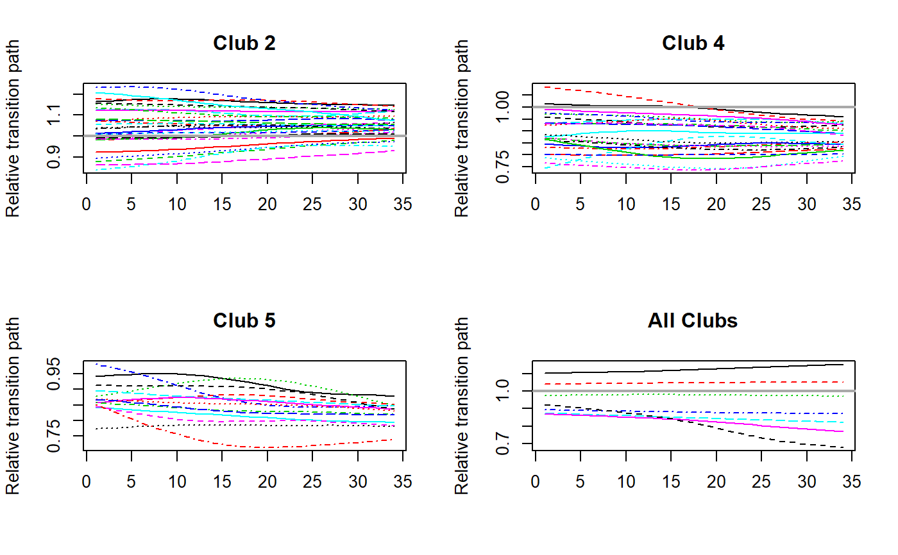plot(clubs, nrows=1, ncols=3, clubs=c(2,4,5), avgTP = FALSE)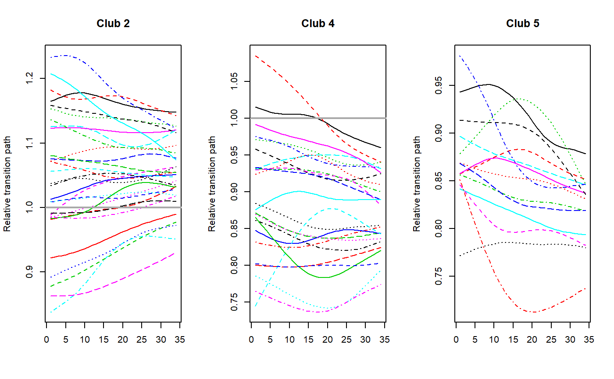plot(clubs, nrows=1, ncols=3, clubs=c(2,4,5), avgTP = FALSE, legend=TRUE)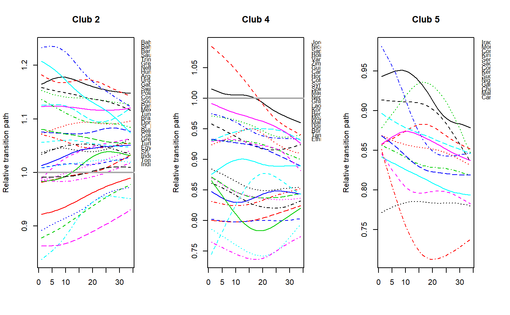plot(clubs, clubs=c(2,4,5), avgTP_clubs = c(1,3))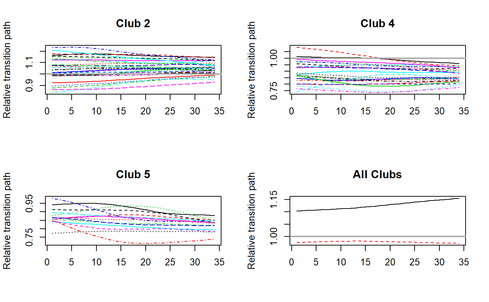plot(clubs, clubs=c(2,4,5), avgTP_clubs = c(1,3), legend=TRUE)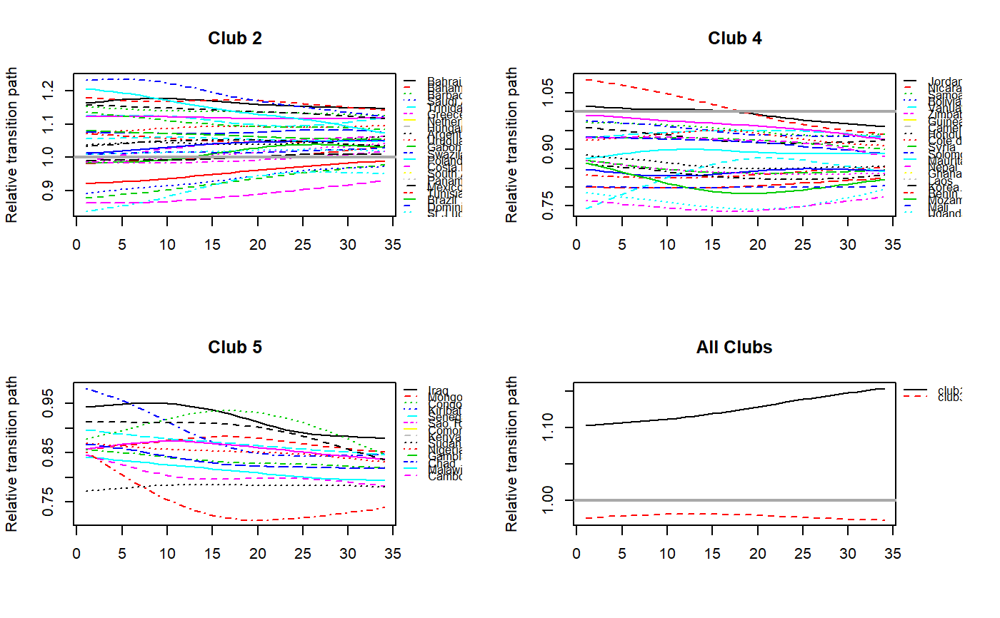#Only plot average transition paths plot(clubs, clubs=NULL, avgTP = TRUE, legend=TRUE)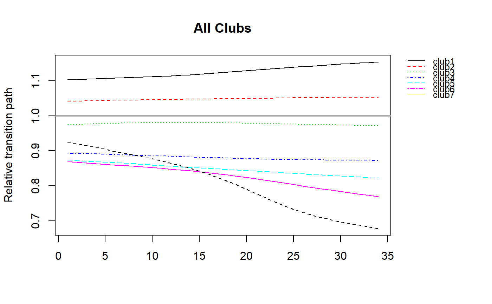